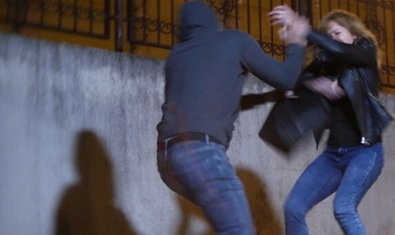
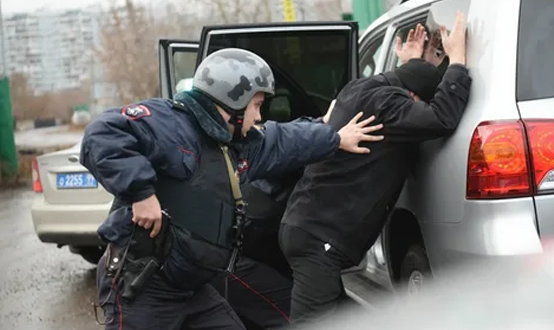

Понятие обстоятельств, исключающих преступность деяния
ЦИТАТА
Глава 8 УК РФ выделяет обстоятельства, исключающие преступность деяния – обстоятельства, при которых совершенное деяние не содержит в себе состава преступления, в связи с чем отсутствует основание уголовной ответственности лица, совершившего это деяние.
Такое деяние, хотя причиняет определенный вред, не считается противозаконным, общественно опасным и наказуемым, и, следовательно, не считается преступным. Например, при задержании преступника сотрудник полиции стреляет по колесам его автомобиля, чем причиняет вред имуществу лица. Однако данное деяние не будет считаться преступлением ввиду наличия уважительной причины для причинения вреда – факта необходимости задержать убегающего преступника.
В обстоятельствах, исключающих преступность деяния, с психологической точки зрения, лицо либо устраняет опасность или избегает ее, либо стремится к достижению общественно полезной цели, либо действует в неведении относительно правомерности (неправомерности) целей поступка.
Законом предусмотрено шесть обстоятельств, исключающих преступность деяния: необходимая оборона (ст. 37 УК), причинение вреда при задержании лица, совершившего преступление (ст. 38 УК), крайняя необходимость (ст. 39 УК), физическое или психическое принуждение (ст. 40 УК), обоснованный риск (ст. 41 УК), исполнение приказа или распоряжения (ст. 42 УК).
Необходимая оборона
ЦИТАТА
Необходимая оборона – защита личности и прав обороняющегося или других лиц, охраняемых законом интересов общества или государства от общественно опасного посягательства, если это посягательство было сопряжено с насилием, опасным для жизни обороняющегося или другого лица, либо с непосредственной угрозой применения такого насилия.
Регулирование необходимой обороны в российском законодательстве является предметом дискуссий. Эти дискуссии в основном касаются вопроса, нужны ли необходимой обороне пределы, или же граждане должны иметь право без ограничений защищать свои жизнь, здоровье, имущество. С одной стороны, если чрезмерно расширить рамки применения необходимой обороны, можно породить произвол граждан. С другой стороны, сузив рамки ее применения, законодатель развяжет руки преступникам, которые могут не опасаться отпора от законопослушных граждан.
Можно выделить следующие условия правомерности необходимой обороны:
а) общественная опасность посягательства;
б) наличность посягательства. Наличность связана с временными рамками посягательства. Право на отражение посягательства появляется уже в момент возникновения реальной угрозы причинения вреда, хотя оно фактически еще не началось. Прекращается данное право при окончании посягательства. Следует иметь в виду, что основным критерием определения этого момента является субъективное восприятие его обороняющимся лицом. Если же вред нападающему причинен при явном для защищающегося окончании посягательства, то содеянное будет оценено как акт мести, но не как необходимая оборона. Например, преступник нападает на жертву с целью грабежа, жертва сопротивляется и в ходе борьбы бьет преступника по голове, отчего тот теряет сознание. Если жертва нападения после этого достает пистолет и стреляет в уже лежащего без сознания преступника, его действия выходят за пределы необходимой обороны. При этом не являются превышением пределов необходимой обороны действия обороняющегося лица, если это лицо вследствие неожиданности посягательства не могло объективно оценить степень и характер опасности нападения;
в) реальность (действительность) посягательства. Общественно опасное посягательство должно быть реальным, а не мнимым. Мнимая оборона – это защита от кажущегося посягательства, когда лицо ошибочно принимает за общественно опасное посягательство деяния, которые в действительности общественно опасными не являются. Например, в переулке к гражданину подходит группа иностранцев и что-то говорит на непонятном ему языке. Гражданин подозревает, что иностранцы собираются его ограбить и стреляет в них из травматического пистолета. Если на самом деле иностранцы спрашивали у гражданина дорогу, то его действия будут признаны мнимой обороной;
г) вред причиняется только самому нападающему (никак не третьим лицам). Вред может заключаться в лишении жизни, причинении вреда здоровью, повреждении имущества;
д) соблюдение пределов необходимой обороны. Пределы необходимой обороны установлены законом только при обороне от посягательства, не сопряженного с насилием, опасным для жизни обороняющегося или другого лица, либо с непосредственной угрозой применения такого насилия. Если граждане защищаются от насилия, опасного для их жизни или жизни других лиц, или существует непосредственная угроза применения такого насилия, они могут защищаться всеми имеющимися у них доступными средствами.
Превышение пределов необходимой обороны – это умышленные действия, явно не соответствующие характеру и степени общественной опасности посягательства, т.е. несоразмерные характеру и опасности посягательства.
При установлении несоответствия принимаются во внимание интенсивность нападения, используемые нападавшим орудия и средства, внезапность нападения, физические данные нападающего и др. Например, в ходе словесного конфликта гражданин на словах угрожает оппоненту причинить вред его здоровью, второй в ответ бьет его ножом – такие действия нельзя считать необходимой обороной, т.к. действия второго лица явно не соответствуют степени угрозы его жизни и здоровью.
Положения о необходимой обороне в равной мере распространяются на всех лиц независимо от их профессиональной или иной специальной подготовки и служебного положения, также независимо от возможности избежать общественно опасного посягательства или обратится за помощью к другим лицам или органам власти (ч. 3 ст. 37 УК РФ).
Причинение вреда при задержании лица, совершившего преступление
Согласно ч. 1 ст. 38 УК, «Не является преступлением причинение вреда лицу, совершившему преступление, при его задержании для доставления органам власти и пресечения возможности совершения им новых преступлений, если иными средствами задержать такое лицо не представлялось возможным и при этом не было допущено превышения необходимых для этого мер».
Действия граждан по задержанию преступников, даже сопряженные с причинением последним вреда, являются общественно полезными, правомерными и не влекут уголовной ответственности.
Право на задержание лица порождается фактом совершения им преступления. При этом у задерживающего должна быть достоверная, не вызывающая сомнение информация о совершении именно этим лицом преступления, а не административного или иного правонарушения.
Задержание преступника с причинением ему вреда будет правомерным при наличии соответствующих условий:
а) вред должен быть причинен лицу, совершившему преступление. Подозрения в совершении преступления обоснованы, если лицо застигнуто при совершении преступления или непосредственно после него; очевидцы, в том числе потерпевшие, прямо укажут на данное лицо как на совершившее преступление; на подозреваемом или на его одежде, при нем или в его жилище будут обнаружены явные следы преступления; лицо покушалось на побег; лицо не имеет постоянного места жительства; не установлена личность подозреваемого;
б) вред причиняется с целью задержания — доставления в правоохранительные органы и пресечение возможности совершения новых преступлений. Поэтому в каждом конкретном случае необходимо выяснять, не было ли самосуда, расправы над задержанным на месте происшествия преступником;
в) причинение вреда задерживаемому является вынужденной мерой, когда иными средствами задержать такое лицо не представилось возможным;
г) вред причиняется только лицу, совершившему преступление, самому задерживаемому (никак не третьим лицам);
д) при причинении вреда задерживаемому не допущено превышения необходимых для этого мер. При умышленном превышении мер, необходимых для задержания, наступает уголовная ответственность. Превышением мер задержания является явное несоответствие причиняемого задерживаемому вреда характеру и степени общественной опасности совершенного им преступления. При этом при задержании убийцы, насильника, лица, совершившего разбойное нападение, пределы причинения вреда несоизмеримо шире, чем при задержании вора, хулигана. Также на пределы причиненного вреда преступнику влияют обстоятельства задержания. Нередко лицо, совершившее карманную кражу, при задержании оказывает отчаянное сопротивление, а убийца, жестоко растерзавший жертву, оказывается неспособным сопротивляться.
Превышение мер, необходимых для задержания преступника, использовано при конструировании привилегированного убийства (ч. 2 ст. 108 УК) и причинения умышленного тяжкого и средней тяжести вреда здоровью (ч. 2 ст. 114 УК). Кроме того, оно учитывается в качестве смягчающего обстоятельства при назначении наказания (п. «ж» ч. 1 ст. 61 УК).